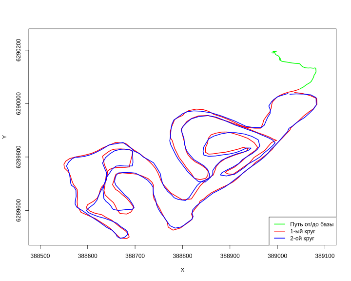

loc <- st_read("../../../data/2022-01-09_14-00_Sun.gpx", layer = "track_points") |>
st_transform(32637)Reading layer `track_points' from data source `C:\platt\education\sevinGIS\data\2022-01-09_14-00_Sun.gpx' using driver `GPX'
Simple feature collection with 835 features and 26 fields
Geometry type: POINT
Dimension: XY
Bounding box: xmin: 37.178 ymin: 56.73616 xmax: 37.18673 ymax: 56.7426
Geodetic CRS: WGS 84loc$time <- as.POSIXct(loc$time, format = "%Y-%m-%d %H:%M:%S", tz = "UTC")
coords <- st_coordinates(loc)
x_coords <- coords[, "X"] # долгота
y_coords <- coords[, "Y"] # широта
lt1 <- as.ltraj(
xy = cbind(x_coords, y_coords), # важно: матрица, а не data.frame
date = loc$time, # время POSIXct
id = loc$track_seg_id, # ID сегмента
typeII = TRUE, # явно указываем тип II
proj4string = sp::CRS(st_crs(loc)$proj4string)
)
df <- ld(lt1)
df$speed_kmh <- df$dist / df$dt * 3.6
df$cum_dist <- cumsum(df$dist)/1000
dist_1 <- df[["dist"]][94:395][1] 4522.259[1] 4523.89[1] 258.7732[1] 432.9444[1] 9046.15plot(df_t1$x, df_t1$y, type = "l", col = "red", lwd = 2,
xlim = c(388500, 389100),
ylim = c(6289500, 6290250),
xlab = "X",
ylab = "Y")
lines(df_t2$x, df_t2$y, col = "blue", lwd = 2)
lines(df_b_start$x, df_b_start$y, col = "green", lwd = 2)
legend ("bottomright",
legend = c("Путь от/до базы", "1-ый круг","2-ой круг"),
col = c("green", "red", "blue"),
lty = c(1, 1, 1),
lwd = c(2, 2, 2))
# Берем самую первую точку и все отсальные
# Переводим все обратно в пространственные данные
# с помощью функции st_distance считается расстояние между первой и остальными
# Находим максимальное расстояние
base_point <- df[1,]
points_sf <- st_as_sf(df, coords = c("x", "y"), crs = st_crs(base_point))
base_point <- st_as_sf(base_point, coords = c("x", "y"), crs = st_crs(points_sf))
# Вычисляем расстояния до базы
distances <- st_distance(points_sf, base_point)
# Находим точку с максимальным расстоянием
max_dist_idx <- which.max(distances)
max_point <- points_sf[max_dist_idx, ]
max_distance <- distances[max_dist_idx]